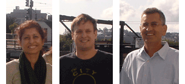

UCSF Computational Biology Core (CBC)
People
Core members

Saurabh Asthana, PhD, is an associate researcher at the UCSF Helen Diller Family Comprehensive Cancer Center. Saurabh did his graduate work in evolutionary biology/genomics at Harvard Medical School in old Boston town. Prior to joining the Computational Biology Core, he labored on behalf of the Bivona and Taylor labs at UCSF, analyzing exomes, whole genomes, transcriptomes, ribosomes, a smattering of genetic screens, etc. Most of his time is spent tooling on various next-generation sequencing analysis pipelines. See also Saurabh's UCSF Profile or contact him.
Ritu Roy, MSc, is a staff scientist at the UCSF Helen Diller Family Comprehensive Cancer Center. Mrs. Roy has a Master's degree in Computer Science from Dibrugarh University, India and the same in Biostatistics from UC Berkeley. As a computational biologist at UCSF, she has ten years of experience analyzing high-throughput genomic data. Prior to coming to UCSF, she was a software engineer for seven years. See also Ritu's UCSF Profile, Cancer Center Profile or contact her.
Henrik Bengtsson, PhD, is an Assistant Professor in Residence in the UCSF Department of Epidemiology and Biostatistics. He obtained his MSc (Computer Science) and PhD (Mathematical Statistics) from Lund University in Sweden. Before joining the UCSF faculty, he did postdoctoral research at the Walter and Eliza Hall Institute of Medical Research in Melbourne and at the University of California at Berkeley. He has extensive experience in computational biology, with a focus on applications of copy-number analysis to cancer genomics research. He has recently developed the aroma.seq tools for analyzing new-generation sequencing data. See also Henrik's UCSF Profile or contact him.
Adam Olshen, PhD and Director of the Core, is Professor In Residence in the UCSF Department of Epidemiology and Biostatistics. Dr. Olshen received his PhD in Biostatistics from the University of Washington. His expertise is in cancer genomics. He is particularly known for methods of DNA copy number analysis, having co-developed the popular CBS algorithm. More recently, he has worked on methods for integrating multiple types of genomic data and for analyzing ribosome profiling data. He has extensive experience in the analysis of genomic, proteomic, and other types of high-throughput biological data. See also Adam's UCSF Profile, Cancer Center Profile or contact him.